import pandas as pd
import numpy as np
import matplotlib.pyplot as plt
import seaborn as sns
from sklearn.model_selection import (train_test_split, KFold, StratifiedKFold,
cross_val_score, cross_validate, cross_val_predict,
validation_curve, GridSearchCV, RandomizedSearchCV,
TunedThresholdClassifierCV)
from sklearn.metrics import (accuracy_score, precision_score, recall_score, f1_score,
roc_auc_score, roc_curve, confusion_matrix,
classification_report, make_scorer, precision_recall_curve)
from sklearn.preprocessing import StandardScaler
from sklearn.pipeline import Pipeline
from sklearn.base import clone
from sklearn.dummy import DummyClassifier
from sklearn.linear_model import LogisticRegression
from sklearn.tree import DecisionTreeClassifier
from sklearn.ensemble import RandomForestClassifier
from scipy.stats import randint
# Oculta avisos internos de versões recentes do seaborn/matplotlib (não afetam os resultados)
import warnings
warnings.filterwarnings('ignore', category=PendingDeprecationWarning)Tutorial 10 - Métodos Avançados em Classificação
Introdução
No Tutorial 8 treinamos três classificadores (Regressão Logística, Árvore de Decisão e Random Forest) para detectar fraudes em transações de cartão de crédito. Assim como no tutorial de regressão, avaliamos os modelos com uma única divisão treino/teste e escolhemos os hiperparâmetros “no olho” (por exemplo, max_depth=6 na árvore).
Neste tutorial vamos aplicar ao problema de classificação as duas técnicas que vimos para regressão:
- Validação cruzada k-fold, agora na sua versão estratificada, que é a mais adequada para classificação;
- Otimização de hiperparâmetros com
GridSearchCVeRandomizedSearchCV.
Além disso, vamos ver dois temas que são específicos de classificação:
- por que a acurácia pode enganar quando as classes são desbalanceadas, e quais métricas usar no lugar dela;
- como otimizar o limiar de decisão (threshold) do classificador, que também é um hiperparâmetro.
Carregando os pacotes
import sklearn
print("Nova versão detectada:", sklearn.__version__)
colors = ['#d62828', '#f77f00', '#003049']Nova versão detectada: 1.8.0
Note
A classe TunedThresholdClassifierCV foi introduzida no scikit-learn 1.5. Se o import acima der erro, atualize o pacote com pip install -U scikit-learn.
Lendo e preparando os dados
Usaremos o mesmo dataset de transações do Tutorial 8, com 10.000 transações e 7 features. A exploração dos dados já foi feita lá, então vamos direto à preparação.
df = pd.read_csv('pydata5/card_transdata.csv')
# A coluna alvo vem como float (0.0 / 1.0); vamos convertê-la para inteiro
df['fraud'] = df['fraud'].astype(int)
df.info()<class 'pandas.DataFrame'>
RangeIndex: 10000 entries, 0 to 9999
Data columns (total 8 columns):
# Column Non-Null Count Dtype
--- ------ -------------- -----
0 distance_from_home 10000 non-null float64
1 distance_from_last_transaction 10000 non-null float64
2 ratio_to_median_purchase_price 10000 non-null float64
3 repeat_retailer 10000 non-null float64
4 used_chip 10000 non-null float64
5 used_pin_number 10000 non-null float64
6 online_order 10000 non-null float64
7 fraud 10000 non-null int64
dtypes: float64(7), int64(1)
memory usage: 625.1 KBClasses desbalanceadas
Antes de modelar, vamos olhar a proporção de fraudes, que é a informação mais importante para escolher como validar e avaliar os modelos.
df['fraud'].value_counts(normalize=True)fraud
0 0.912
1 0.088
Name: proportion, dtype: float64sns.countplot(data=df, x='fraud', hue='fraud', palette=colors[0:2], legend=False)
plt.title('Distribuição da variável alvo')
plt.show()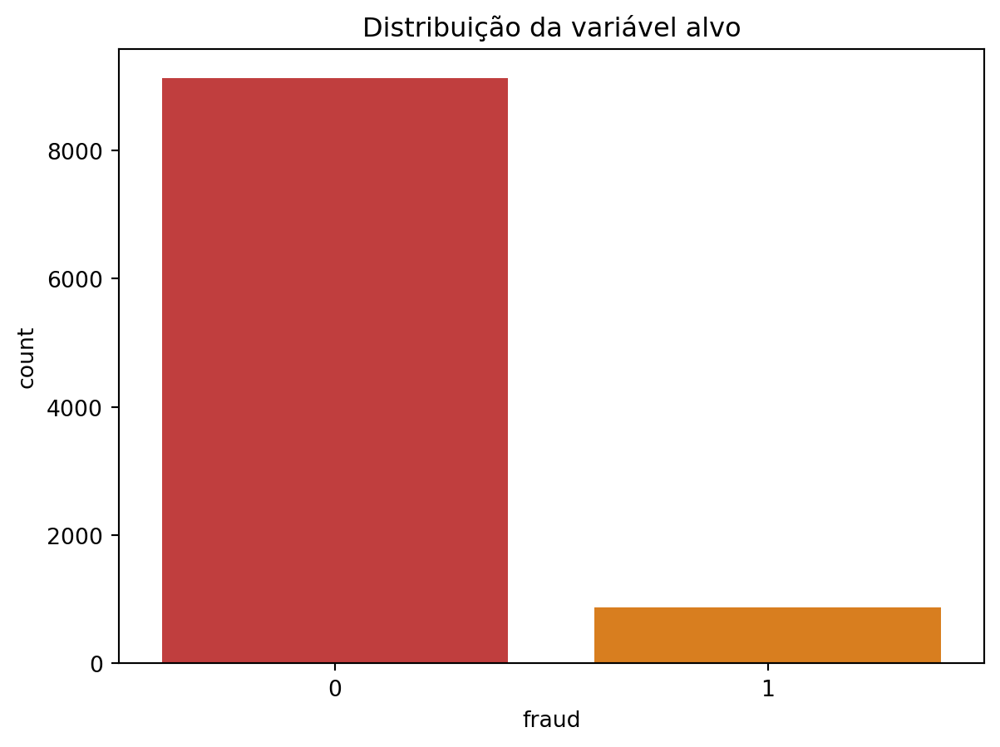
Apenas uma pequena fração das transações é fraude. Isto é um problema de classes desbalanceadas e tem duas consequências importantes:
- A acurácia engana. Um “modelo” que responde sempre não é fraude já teria uma acurácia altíssima, sem detectar nenhuma fraude.
- As divisões aleatórias podem ficar desequilibradas, com folds contendo mais ou menos fraudes do que o dataset completo.
Split treino/teste
Separamos 30% dos dados para teste, como no Tutorial 8. A única diferença é o argumento stratify=y, que garante que a proporção de fraudes seja a mesma no treino e no teste.
Important
Assim como no tutorial de regressão, o conjunto de teste fica guardado “no cofre” e só será usado na avaliação final. Toda a validação cruzada e a busca de hiperparâmetros usam apenas os dados de treino.
X = df.drop(['fraud'], axis=1)
y = df['fraud']
X_train, X_test, y_train, y_test = train_test_split(X, y, test_size=0.3,
random_state=2025, stratify=y)
print(f'Treino: {X_train.shape[0]} linhas | Teste: {X_test.shape[0]} linhas')
print(f'% fraude no treino: {y_train.mean():.4f} | % fraude no teste: {y_test.mean():.4f}')Treino: 7000 linhas | Teste: 3000 linhas
% fraude no treino: 0.0880 | % fraude no teste: 0.0880Parte 1 - Validação Cruzada em Classificação
Métricas além da acurácia
Relembrando a matriz de confusão do Tutorial 8 (TP = verdadeiros positivos, TN = verdadeiros negativos, FP = falsos positivos, FN = falsos negativos), vamos usar as seguintes métricas:
- Acurácia: percentual de acertos. \(A=\frac{TP+TN}{TP+FP+FN+TN}\)
- Precisão: das transações que o modelo marcou como fraude, quantas realmente eram? \(P=\frac{TP}{TP+FP}\)
- Recall (sensibilidade): das fraudes que existiam, quantas o modelo encontrou? \(R=\frac{TP}{TP+FN}\)
- F1: média harmônica entre precisão e recall, que só é alta se as duas forem altas. \(F1=2\cdot\frac{P \cdot R}{P+R}\)
- AUC: a “nota” da curva ROC, que vimos no Tutorial 8.
Em detecção de fraude, o recall costuma ser crítico (deixar passar uma fraude é caro), mas a precisão também importa (bloquear o cartão de um cliente honesto gera transtorno). Por isso usaremos o F1 como métrica principal para otimizar os modelos.
Vamos criar um dicionário com essas métricas para usar em todo o tutorial. Para a precisão usamos make_scorer com zero_division=0, para evitar avisos quando um modelo não prevê nenhuma fraude.
metricas = {
'acuracia': 'accuracy',
'precisao': make_scorer(precision_score, zero_division=0),
'recall': 'recall',
'f1': 'f1',
'auc': 'roc_auc'
}KFold vs. StratifiedKFold
O KFold que usamos na regressão divide as linhas de forma aleatória, sem olhar para a classe. Em classificação com classes raras, alguns folds podem ficar com muito mais (ou muito menos) fraudes do que outros.
O StratifiedKFold resolve isso: ele garante que cada fold tenha a mesma proporção de classes do conjunto completo. Para enxergar a diferença, vamos usar uma amostra pequena de 300 linhas e dividi-la em 5 folds com cada estratégia.
X_peq, y_peq = X_train.iloc[:300], y_train.iloc[:300]
kf = KFold(n_splits=5, shuffle=True, random_state=2025)
skf = StratifiedKFold(n_splits=5, shuffle=True, random_state=2025)
props = []
for nome, cv in [('KFold', kf), ('StratifiedKFold', skf)]:
for i, (idx_treino, idx_valid) in enumerate(cv.split(X_peq, y_peq)):
props.append({'Estratégia': nome, 'Fold': i + 1,
'% fraude': y_peq.iloc[idx_valid].mean()})
props = pd.DataFrame(props)
sns.barplot(data=props, x='Fold', y='% fraude', hue='Estratégia', palette=colors[1:3])
plt.axhline(y_peq.mean(), color=colors[0], linestyle='--', label='% fraude na amostra')
plt.title('Proporção de fraudes em cada fold de validação')
plt.legend()
plt.show()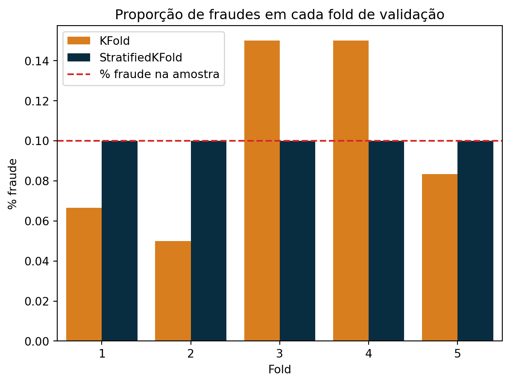
Com o StratifiedKFold todos os folds ficam praticamente na linha tracejada. Em classificação, sempre use a versão estratificada. Aliás, quando passamos um número inteiro para cv (por exemplo cv=5) em um classificador, o scikit-learn já usa StratifiedKFold automaticamente. Aqui vamos criar o objeto explicitamente para controlar o embaralhamento com random_state.
A partir de agora usaremos o skf com 5 folds em todo o tutorial:
skf = StratifiedKFold(n_splits=5, shuffle=True, random_state=2025)Implementando o k-fold estratificado “na mão”
Vamos repetir o laço do tutorial de regressão, agora com a árvore de decisão do Tutorial 8 e as métricas de classificação.
resultados_folds = []
for i, (idx_treino, idx_valid) in enumerate(skf.split(X_train, y_train)):
X_tr, X_val = X_train.iloc[idx_treino], X_train.iloc[idx_valid]
y_tr, y_val = y_train.iloc[idx_treino], y_train.iloc[idx_valid]
modelo = DecisionTreeClassifier(max_depth=6, class_weight='balanced', random_state=2025)
modelo.fit(X_tr, y_tr)
y_pred_val = modelo.predict(X_val)
resultados_folds.append({
'Fold': i + 1,
'% fraude': y_val.mean(),
'Acurácia': accuracy_score(y_val, y_pred_val),
'Precisão': precision_score(y_val, y_pred_val),
'Recall': recall_score(y_val, y_pred_val),
'F1': f1_score(y_val, y_pred_val)
})
resultados_folds = pd.DataFrame(resultados_folds)
resultados_folds| Fold | % fraude | Acurácia | Precisão | Recall | F1 | |
|---|---|---|---|---|---|---|
| 0 | 1 | 0.087857 | 0.993571 | 0.959677 | 0.967480 | 0.963563 |
| 1 | 2 | 0.087857 | 0.995714 | 0.975610 | 0.975610 | 0.975610 |
| 2 | 3 | 0.087857 | 0.999286 | 0.991935 | 1.000000 | 0.995951 |
| 3 | 4 | 0.087857 | 0.997857 | 0.976190 | 1.000000 | 0.987952 |
| 4 | 5 | 0.088571 | 0.996429 | 0.991736 | 0.967742 | 0.979592 |
resultados_folds.drop(columns='Fold').agg(['mean', 'std'])| % fraude | Acurácia | Precisão | Recall | F1 | |
|---|---|---|---|---|---|
| mean | 0.088000 | 0.996571 | 0.979030 | 0.982166 | 0.980534 |
| std | 0.000319 | 0.002167 | 0.013437 | 0.016604 | 0.012307 |
Usando cross_val_score e cross_validate
O mesmo resultado em uma linha com cross_val_score:
scores_f1 = cross_val_score(
DecisionTreeClassifier(max_depth=6, class_weight='balanced', random_state=2025),
X_train, y_train, cv=skf, scoring='f1')
print('F1 em cada fold:', np.round(scores_f1, 4))
print(f'F1 médio: {scores_f1.mean():.4f} ± {scores_f1.std():.4f}')F1 em cada fold: [0.9636 0.9756 0.996 0.988 0.9796]
F1 médio: 0.9805 ± 0.0110E todas as métricas de uma vez com cross_validate, passando o dicionário metricas:
cv_tree = cross_validate(
DecisionTreeClassifier(max_depth=6, class_weight='balanced', random_state=2025),
X_train, y_train, cv=skf, scoring=metricas)
pd.DataFrame(cv_tree).round(4)| fit_time | score_time | test_acuracia | test_precisao | test_recall | test_f1 | test_auc | |
|---|---|---|---|---|---|---|---|
| 0 | 0.0060 | 0.0054 | 0.9936 | 0.9597 | 0.9675 | 0.9636 | 0.9832 |
| 1 | 0.0061 | 0.0045 | 0.9957 | 0.9756 | 0.9756 | 0.9756 | 0.9866 |
| 2 | 0.0059 | 0.0044 | 0.9993 | 0.9919 | 1.0000 | 0.9960 | 0.9996 |
| 3 | 0.0060 | 0.0046 | 0.9979 | 0.9762 | 1.0000 | 0.9880 | 1.0000 |
| 4 | 0.0074 | 0.0050 | 0.9964 | 0.9917 | 0.9677 | 0.9796 | 0.9838 |
Comparando os modelos do Tutorial 8 com validação cruzada
Vamos avaliar os três modelos do Tutorial 8 e incluir um modelo de referência (baseline): o DummyClassifier, que sempre prevê a classe mais frequente. Qualquer modelo útil precisa superar esse baseline.
Note
Regressão Logística com Pipeline: a Regressão Logística do scikit-learn aplica regularização (hiperparâmetro C), cujo efeito depende da escala das features. Por isso vamos colocá-la em um Pipeline com StandardScaler, que, como vimos no tutorial de regressão, é ajustado apenas nos folds de treino em cada iteração.
modelos = {
'Baseline': DummyClassifier(strategy='most_frequent'),
'Regressão Logística': Pipeline([
('scaler', StandardScaler()),
('logreg', LogisticRegression(solver='liblinear', max_iter=5000, random_state=42))
]),
'Árvore de Decisão': DecisionTreeClassifier(max_depth=6, class_weight='balanced',
random_state=2025),
'Random Forest': RandomForestClassifier(n_estimators=100, class_weight='balanced',
random_state=42, n_jobs=-1)
}
resultados_cv = []
for nome, modelo in modelos.items():
cv_res = cross_validate(modelo, X_train, y_train, cv=skf, scoring=metricas)
for fold in range(5):
resultados_cv.append({
'Modelo': nome, 'Fold': fold + 1,
'Acurácia': cv_res['test_acuracia'][fold],
'Precisão': cv_res['test_precisao'][fold],
'Recall': cv_res['test_recall'][fold],
'F1': cv_res['test_f1'][fold],
'AUC': cv_res['test_auc'][fold]
})
resultados_cv = pd.DataFrame(resultados_cv)
resultados_cv.groupby('Modelo', sort=False).mean().drop(columns='Fold').round(4)| Acurácia | Precisão | Recall | F1 | AUC | |
|---|---|---|---|---|---|
| Modelo | |||||
| Baseline | 0.9120 | 0.0000 | 0.0000 | 0.0000 | 0.5000 |
| Regressão Logística | 0.9599 | 0.8968 | 0.6152 | 0.7273 | 0.9751 |
| Árvore de Decisão | 0.9966 | 0.9790 | 0.9822 | 0.9805 | 0.9907 |
| Random Forest | 0.9977 | 1.0000 | 0.9741 | 0.9868 | 0.9999 |
Repare no Baseline: sua acurácia é alta (cerca de 91%, exatamente a proporção de transações legítimas), mas precisão, recall e F1 são zero, e a AUC é 0.5 (igual a jogar uma moeda). Ele é a prova de que a acurácia sozinha não serve para avaliar um classificador com classes desbalanceadas.
Repare também na Regressão Logística: sua acurácia (cerca de 96%) parece muito boa, mas o F1 fica bem abaixo dos modelos baseados em árvores, porque o recall é baixo (ela deixa passar uma boa parte das fraudes). A Regressão Logística separa as classes com uma fronteira linear, enquanto neste dataset a fraude depende de limiares e combinações entre as features (por exemplo, compras com valor muito acima da mediana e feitas online e sem PIN). Esse tipo de regra é exatamente o que as árvores de decisão aprendem.
Vamos visualizar a distribuição de acurácia e F1 nos 5 folds:
resultados_long = resultados_cv.melt(id_vars=['Modelo', 'Fold'],
value_vars=['Acurácia', 'F1'],
var_name='Métrica', value_name='Valor')
g = sns.catplot(data=resultados_long, x='Modelo', y='Valor', col='Métrica',
kind='box', hue='Modelo', palette=colors + ['grey'], height=4, aspect=1.2)
g.set_xticklabels(rotation=20)
g.figure.suptitle('Validação cruzada estratificada (5 folds) - modelos do Tutorial 8', y=1.04)
plt.show()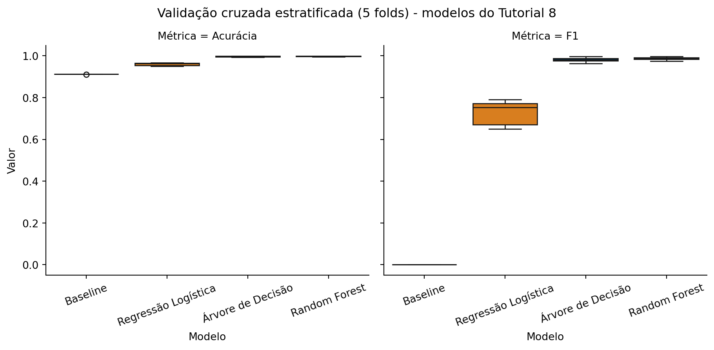
Parte 2 - Otimização de Hiperparâmetros
Principais hiperparâmetros dos classificadores
| Modelo | Hiperparâmetro | O que controla |
|---|---|---|
| Regressão Logística | C |
Inverso da força da regularização (C pequeno = modelo mais simples) |
| Regressão Logística | class_weight |
Peso dado a cada classe no treino |
| Árvore de Decisão | max_depth |
Profundidade máxima da árvore |
| Árvore de Decisão | min_samples_leaf |
Número mínimo de observações em cada folha |
| Árvore / Random Forest | criterion |
Medida de impureza (gini ou entropy) |
| Random Forest | n_estimators |
Número de árvores |
| Random Forest | max_features |
Número de features sorteadas em cada divisão |
| Todos | limiar de decisão | Probabilidade a partir da qual prevemos “fraude” (0.5 por padrão) |
O hiperparâmetro class_weight='balanced' merece destaque em problemas desbalanceados: ele faz o modelo dar mais peso aos erros na classe rara (fraude), o que costuma aumentar o recall em troca de alguma precisão.
Curva de validação: max_depth da árvore
No Tutorial 8 escolhemos max_depth=6. Será uma boa escolha? Vamos usar a validation_curve com o F1 como métrica.
profundidades = np.arange(1, 21)
train_scores, valid_scores = validation_curve(
DecisionTreeClassifier(class_weight='balanced', random_state=2025), X_train, y_train,
param_name='max_depth', param_range=profundidades,
cv=skf, scoring='f1'
)
plt.plot(profundidades, train_scores.mean(axis=1), 'o-', color=colors[1], label='Treino')
plt.plot(profundidades, valid_scores.mean(axis=1), 'o-', color=colors[2], label='Validação (CV)')
plt.fill_between(profundidades,
valid_scores.mean(axis=1) - valid_scores.std(axis=1),
valid_scores.mean(axis=1) + valid_scores.std(axis=1),
color=colors[2], alpha=0.2)
plt.axvline(6, color=colors[0], linestyle='--', label='max_depth do Tutorial 8')
plt.xlabel('max_depth')
plt.ylabel('F1')
plt.title('Curva de validação - Árvore de Decisão')
plt.legend()
plt.show()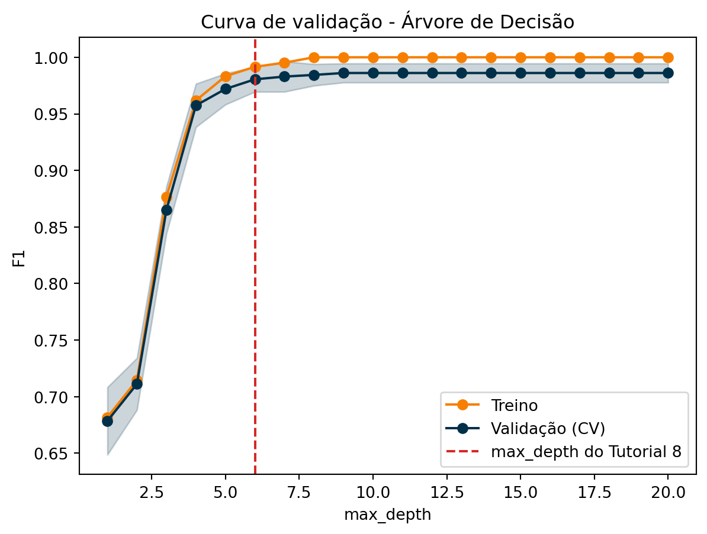
melhor_depth = profundidades[valid_scores.mean(axis=1).argmax()]
print(f'Melhor max_depth pela curva de validação: {melhor_depth}')Melhor max_depth pela curva de validação: 9A leitura é parecida com a do tutorial de regressão: com árvores rasas (profundidade 1 a 3) o modelo sofre de underfitting. A partir de certa profundidade, a curva de treino chega a 1 e a de validação para de melhorar: o modelo passa a decorar o treino sem ganhar capacidade de generalização.
Neste dataset a curva de validação estabiliza em vez de cair, porque os padrões de fraude são bem definidos e há pouco ruído para a árvore decorar. Note também que o max_depth=6 do Tutorial 8 já estava perto do platô.
Grid Search: Regressão Logística
Para a Regressão Logística vamos otimizar C e class_weight. Como C varia em ordens de grandeza, usamos valores em escala logarítmica com np.logspace. Lembre que, dentro do Pipeline, o nome do hiperparâmetro recebe o prefixo do passo: logreg__C.
pipe_logreg = Pipeline([
('scaler', StandardScaler()),
('logreg', LogisticRegression(solver='liblinear', max_iter=5000, random_state=42))
])
param_grid_logreg = {
'logreg__C': np.logspace(-3, 2, 6), # 0.001, 0.01, 0.1, 1, 10, 100
'logreg__class_weight': [None, 'balanced']
}
grid_logreg = GridSearchCV(pipe_logreg, param_grid=param_grid_logreg,
cv=skf, scoring=metricas, refit='f1', n_jobs=-1)
grid_logreg.fit(X_train, y_train)
print('Melhores hiperparâmetros:', grid_logreg.best_params_)
print(f'Melhor F1 (CV): {grid_logreg.best_score_:.4f}')Melhores hiperparâmetros: {'logreg__C': np.float64(10.0), 'logreg__class_weight': None}
Melhor F1 (CV): 0.7488
Tip
Busca com várias métricas: passamos o dicionário metricas em scoring e indicamos com refit='f1' qual métrica decide o melhor modelo. Assim o cv_results_ guarda todas as métricas para cada combinação, e podemos analisar os trade-offs.
Vamos ver como precisão, recall e F1 mudam com C para cada opção de class_weight:
res_logreg = pd.DataFrame(grid_logreg.cv_results_)
# Rótulos em texto a partir da coluna 'params' (assim o valor None aparece como 'None')
res_logreg['class_weight'] = res_logreg['params'].apply(lambda p: str(p['logreg__class_weight']))
fig, axes = plt.subplots(1, 3, figsize=(13, 4), sharey=True)
titulos = {'precisao': 'Precisão', 'recall': 'Recall', 'f1': 'F1'}
for ax, met in zip(axes, titulos):
sns.lineplot(data=res_logreg, x='param_logreg__C', y=f'mean_test_{met}',
hue='class_weight', marker='o', palette=colors[0:2], ax=ax)
ax.set_xscale('log')
ax.set_xlabel('C')
ax.set_ylabel('Valor médio (CV)')
ax.set_title(titulos[met])
plt.tight_layout()
plt.show()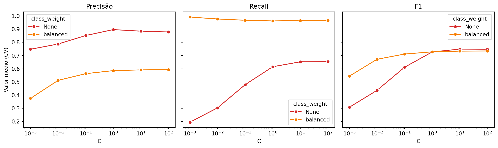
Este gráfico mostra claramente o trade-off entre precisão e recall: class_weight='balanced' aumenta muito o recall (encontra mais fraudes), mas reduz a precisão (mais alarmes falsos). O F1 nos ajuda a escolher o melhor equilíbrio entre os dois.
Observe também que, a partir de C = 1, as curvas ficam praticamente planas: diminuir a regularização além desse ponto já não muda o modelo. Mesmo otimizada, a Regressão Logística continua limitada pela sua fronteira linear, e a otimização de hiperparâmetros não resolve uma limitação do tipo de modelo.
logreg_otimizada = grid_logreg.best_estimator_Grid Search: Árvore de Decisão
Agora uma grade com três hiperparâmetros da árvore:
param_grid_tree = {
'max_depth': [2, 4, 6, 8, 10, 12, None],
'min_samples_leaf': [1, 5, 20, 50],
'class_weight': [None, 'balanced']
}
n_comb = 7 * 4 * 2
print(f'Combinações: {n_comb} | Modelos treinados: {n_comb * 5}')Combinações: 56 | Modelos treinados: 280grid_tree = GridSearchCV(DecisionTreeClassifier(random_state=2025),
param_grid=param_grid_tree,
cv=skf, scoring=metricas, refit='f1', n_jobs=-1)
grid_tree.fit(X_train, y_train)
print('Melhores hiperparâmetros:', grid_tree.best_params_)
print(f'Melhor F1 (CV): {grid_tree.best_score_:.4f}')Melhores hiperparâmetros: {'class_weight': 'balanced', 'max_depth': 10, 'min_samples_leaf': 1}
Melhor F1 (CV): 0.9861As 10 melhores combinações, com as demais métricas:
res_tree = pd.DataFrame(grid_tree.cv_results_)
res_tree[['param_max_depth', 'param_min_samples_leaf', 'param_class_weight',
'mean_test_f1', 'std_test_f1', 'mean_test_precisao', 'mean_test_recall',
'rank_test_f1']] \
.sort_values('rank_test_f1').head(10).round(4)| param_max_depth | param_min_samples_leaf | param_class_weight | mean_test_f1 | std_test_f1 | mean_test_precisao | mean_test_recall | rank_test_f1 | |
|---|---|---|---|---|---|---|---|---|
| 44 | 10 | 1 | balanced | 0.9861 | 0.0084 | 0.9902 | 0.9822 | 1 |
| 52 | None | 1 | balanced | 0.9861 | 0.0084 | 0.9902 | 0.9822 | 1 |
| 48 | 12 | 1 | balanced | 0.9861 | 0.0084 | 0.9902 | 0.9822 | 1 |
| 40 | 8 | 1 | balanced | 0.9844 | 0.0095 | 0.9902 | 0.9789 | 4 |
| 20 | 12 | 1 | NaN | 0.9812 | 0.0075 | 0.9870 | 0.9757 | 5 |
| 24 | None | 1 | NaN | 0.9812 | 0.0075 | 0.9870 | 0.9757 | 5 |
| 12 | 8 | 1 | NaN | 0.9812 | 0.0075 | 0.9870 | 0.9757 | 5 |
| 8 | 6 | 1 | NaN | 0.9812 | 0.0075 | 0.9870 | 0.9757 | 5 |
| 16 | 10 | 1 | NaN | 0.9812 | 0.0075 | 0.9870 | 0.9757 | 5 |
| 36 | 6 | 1 | balanced | 0.9805 | 0.0110 | 0.9790 | 0.9822 | 10 |
Note
Empates: repare que várias combinações dividem o primeiro lugar (rank_test_f1 = 1), pois produzem árvores com o mesmo desempenho nos folds. Nesse caso o GridSearchCV fica com a primeira combinação empatada na ordem da grade. Entre modelos empatados, costuma ser preferível o mais simples (árvore mais rasa), que é mais fácil de interpretar.
Heatmap do F1 para max_depth x min_samples_leaf, fixando o melhor class_weight:
melhor_cw = str(grid_tree.best_params_['class_weight'])
# Rótulos em texto a partir da coluna 'params' (assim o valor None aparece como 'None')
res_tree['cw'] = res_tree['params'].apply(lambda p: str(p['class_weight']))
res_tree['depth'] = res_tree['params'].apply(lambda p: str(p['max_depth']))
tabela_tree = res_tree[res_tree['cw'] == melhor_cw].pivot_table(
index='param_min_samples_leaf', columns='depth', values='mean_test_f1')
# Mantém as colunas na mesma ordem da grade
tabela_tree = tabela_tree[[str(d) for d in param_grid_tree['max_depth']]]
sns.heatmap(tabela_tree, annot=True, fmt='.3f', cmap='Reds')
plt.xlabel('max_depth')
plt.ylabel('min_samples_leaf')
plt.title(f'F1 médio (CV) - Árvore de Decisão (class_weight = {melhor_cw})')
plt.show()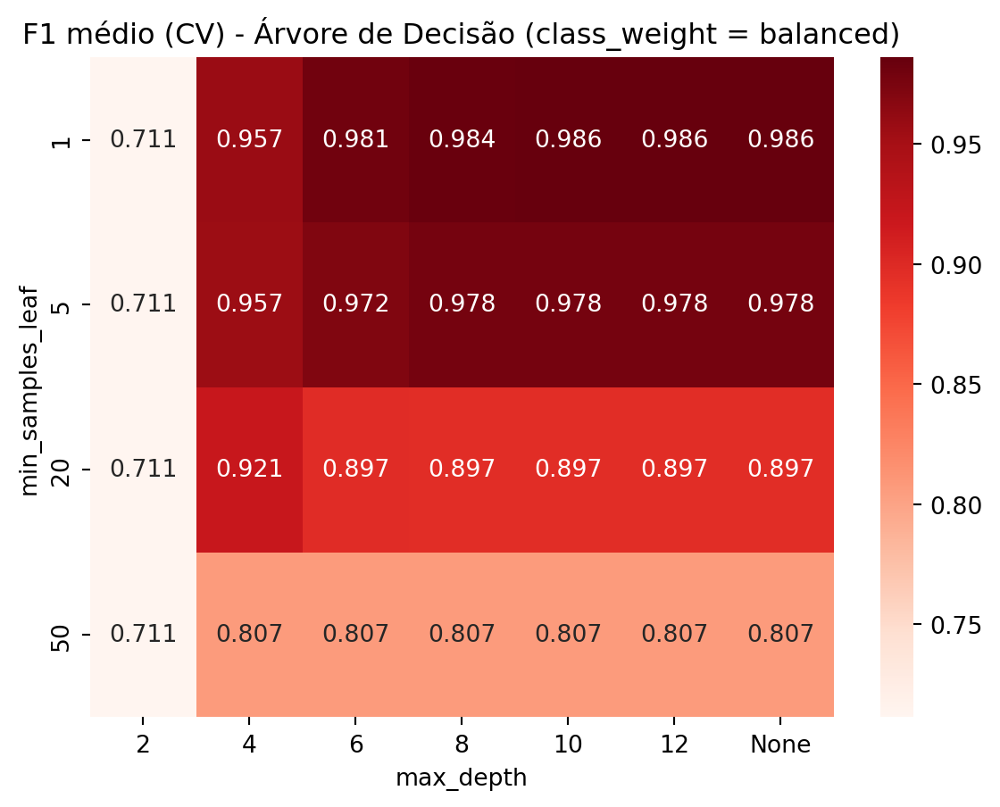
tree_otimizada = grid_tree.best_estimator_O heatmap mostra que min_samples_leaf grande prejudica bastante o modelo: exigir muitas observações em cada folha impede a árvore de isolar os grupos menores de fraudes.
Randomized Search: Random Forest
O Random Forest é o modelo mais caro de treinar, então vamos usar o RandomizedSearchCV. Como o dataset tem 10.000 linhas, a busca é rápida o suficiente para sortearmos 30 combinações.
param_dist_rf = {
'n_estimators': randint(50, 300),
'max_depth': [None, 5, 10, 20],
'min_samples_leaf': randint(1, 10),
'max_features': ['sqrt', 0.5, 1.0],
'criterion': ['gini', 'entropy'],
'class_weight': [None, 'balanced']
}
random_rf = RandomizedSearchCV(
RandomForestClassifier(random_state=42),
param_distributions=param_dist_rf,
n_iter=30,
cv=skf, scoring=metricas, refit='f1',
random_state=2025, n_jobs=-1
)
random_rf.fit(X_train, y_train)
print('Melhores hiperparâmetros:', random_rf.best_params_)
print(f'Melhor F1 (CV): {random_rf.best_score_:.4f}')Melhores hiperparâmetros: {'class_weight': 'balanced', 'criterion': 'entropy', 'max_depth': None, 'max_features': 'sqrt', 'min_samples_leaf': 1, 'n_estimators': 167}
Melhor F1 (CV): 0.9910res_rf = pd.DataFrame(random_rf.cv_results_)
res_rf[['param_n_estimators', 'param_max_depth', 'param_min_samples_leaf',
'param_max_features', 'param_criterion', 'param_class_weight',
'mean_test_f1', 'std_test_f1', 'rank_test_f1']] \
.sort_values('rank_test_f1').head(10).round(4)| param_n_estimators | param_max_depth | param_min_samples_leaf | param_max_features | param_criterion | param_class_weight | mean_test_f1 | std_test_f1 | rank_test_f1 | |
|---|---|---|---|---|---|---|---|---|---|
| 3 | 167 | None | 1 | sqrt | entropy | balanced | 0.9910 | 0.0066 | 1 |
| 5 | 123 | None | 2 | sqrt | entropy | balanced | 0.9901 | 0.0081 | 2 |
| 23 | 121 | 20 | 3 | sqrt | entropy | balanced | 0.9893 | 0.0077 | 3 |
| 12 | 111 | 5 | 3 | sqrt | gini | balanced | 0.9877 | 0.0091 | 4 |
| 21 | 129 | 10 | 1 | 0.5 | gini | NaN | 0.9868 | 0.0088 | 5 |
| 22 | 90 | 10 | 6 | sqrt | entropy | balanced | 0.9862 | 0.0119 | 6 |
| 4 | 169 | 5 | 1 | 0.5 | gini | balanced | 0.9861 | 0.0099 | 7 |
| 13 | 291 | 20 | 1 | 1.0 | gini | NaN | 0.9844 | 0.0061 | 8 |
| 17 | 296 | None | 2 | 0.5 | gini | NaN | 0.9844 | 0.0096 | 9 |
| 19 | 290 | 10 | 3 | 0.5 | gini | NaN | 0.9835 | 0.0105 | 10 |
Um gráfico interessante para a busca aleatória é comparar precisão e recall de todas as combinações testadas, colorindo pelo F1:
plt.figure(figsize=(7, 5))
pontos = plt.scatter(res_rf['mean_test_recall'], res_rf['mean_test_precisao'],
c=res_rf['mean_test_f1'], cmap='Reds', s=80, edgecolor='black')
plt.colorbar(pontos, label='F1 médio (CV)')
melhor = res_rf.loc[res_rf['rank_test_f1'] == 1].iloc[0]
plt.scatter(melhor['mean_test_recall'], melhor['mean_test_precisao'],
marker='*', s=400, color=colors[2], label='Melhor combinação')
plt.xlabel('Recall médio (CV)')
plt.ylabel('Precisão média (CV)')
plt.title('Randomized Search - Random Forest')
plt.legend()
plt.show()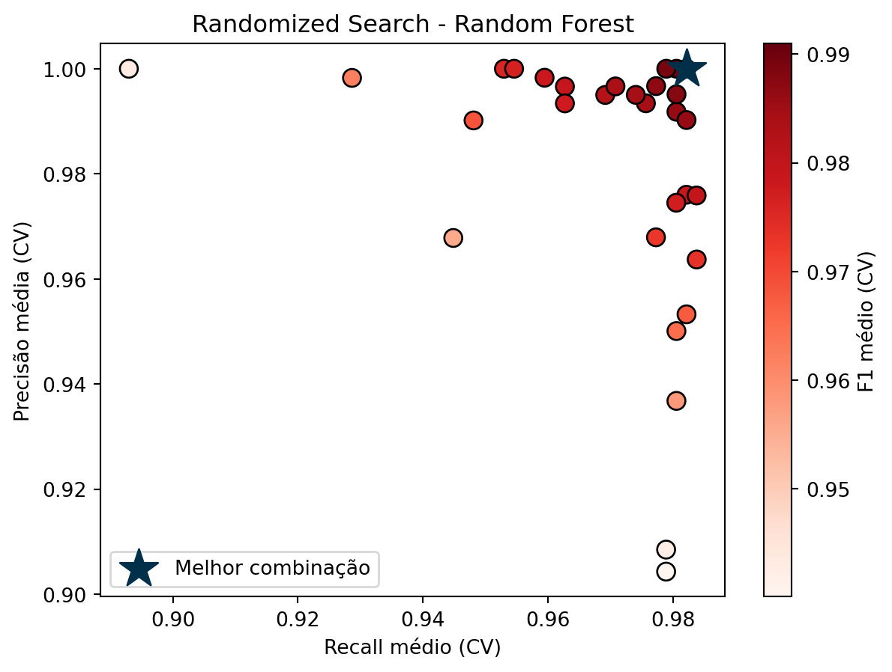
rf_otimizado = random_rf.best_estimator_Otimizando o limiar de decisão
Por padrão, predict() classifica uma transação como fraude quando a probabilidade prevista é maior que 0.5. Mas esse limiar é arbitrário: ele também é um hiperparâmetro e pode ser otimizado.
Primeiro vamos entender o efeito do limiar. Com cross_val_predict obtemos as probabilidades de cada observação quando ela estava no fold de validação (ou seja, previsões “honestas”, fora da amostra de treino). Depois calculamos precisão, recall e F1 para cada limiar possível.
proba_cv = cross_val_predict(logreg_otimizada, X_train, y_train, cv=skf,
method='predict_proba')[:, 1]
precisao, recall, limiares = precision_recall_curve(y_train, proba_cv)
f1 = 2 * precisao * recall / (precisao + recall + 1e-12)
plt.plot(limiares, precisao[:-1], color=colors[0], label='Precisão')
plt.plot(limiares, recall[:-1], color=colors[1], label='Recall')
plt.plot(limiares, f1[:-1], color=colors[2], lw=3, label='F1')
plt.axvline(0.5, color='grey', linestyle='--', label='Limiar padrão (0.5)')
plt.xlabel('Limiar de decisão')
plt.ylabel('Valor')
plt.title('Efeito do limiar - Regressão Logística otimizada')
plt.legend()
plt.show()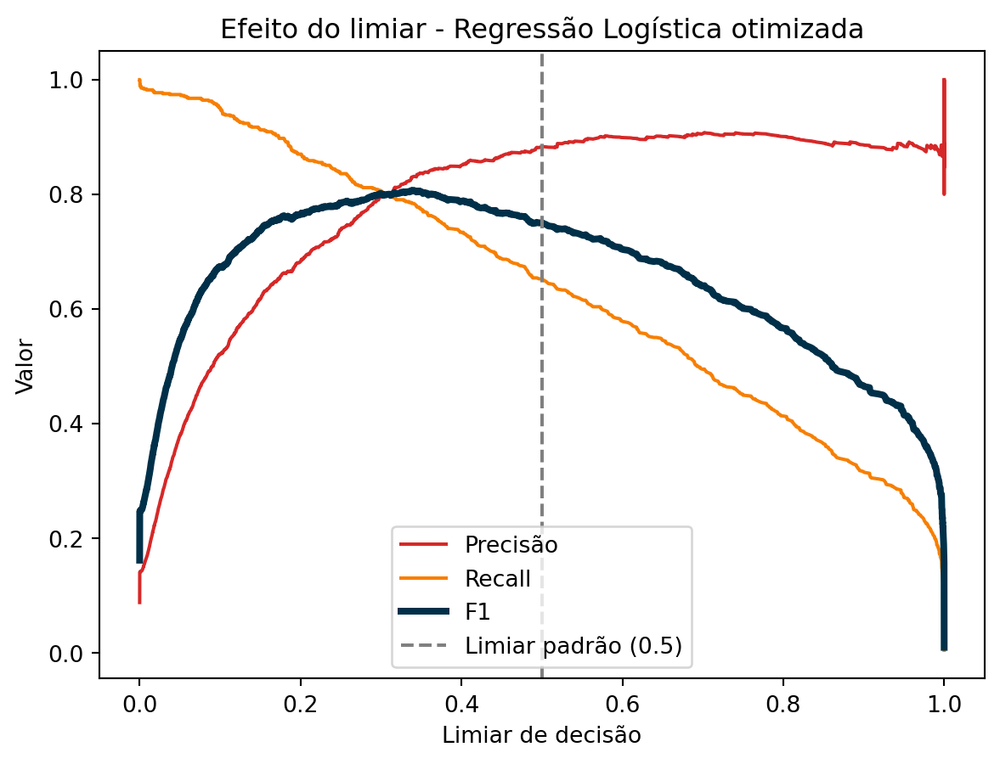
Quanto menor o limiar, mais transações são marcadas como fraude: o recall sobe e a precisão cai. O TunedThresholdClassifierCV automatiza a escolha do limiar que maximiza uma métrica, usando validação cruzada internamente:
logreg_limiar = TunedThresholdClassifierCV(logreg_otimizada, scoring='f1', cv=skf)
logreg_limiar.fit(X_train, y_train)
print(f'Limiar ótimo: {logreg_limiar.best_threshold_:.3f}')
print(f'F1 com o limiar ótimo (CV): {logreg_limiar.best_score_:.4f}')Limiar ótimo: 0.343
F1 com o limiar ótimo (CV): 0.8043
Tip
A escolha da métrica para otimizar o limiar é uma decisão de negócio. Se deixar passar uma fraude for muito mais caro do que um alarme falso, faz sentido otimizar o recall com uma restrição mínima de precisão, ou usar uma métrica que pondere os custos de cada tipo de erro.
Validação cruzada aninhada
Como vimos na regressão, o best_score_ é levemente otimista, pois é o máximo entre várias combinações testadas. A CV aninhada estima o desempenho do processo completo (busca + treino). Vamos aplicá-la à Regressão Logística, que é rápida de treinar:
cv_interno = StratifiedKFold(n_splits=5, shuffle=True, random_state=1)
cv_externo = StratifiedKFold(n_splits=5, shuffle=True, random_state=2)
busca_logreg = GridSearchCV(pipe_logreg, param_grid=param_grid_logreg,
cv=cv_interno, scoring='f1', n_jobs=-1)
scores_aninhados = cross_val_score(busca_logreg, X_train, y_train,
cv=cv_externo, scoring='f1')
print('F1 em cada fold externo:', np.round(scores_aninhados, 4))
print(f'F1 da CV aninhada : {scores_aninhados.mean():.4f} ± {scores_aninhados.std():.4f}')
print(f'best_score_ (CV simples): {grid_logreg.best_score_:.4f}')F1 em cada fold externo: [0.713 0.7273 0.7798 0.8111 0.7628]
F1 da CV aninhada : 0.7588 ± 0.0355
best_score_ (CV simples): 0.7488Parte 3 - Avaliação final no conjunto de teste
Modelos finais
Como as buscas foram feitas com todo o conjunto de treino, os modelos otimizados já estão prontos: por padrão (refit=True), o GridSearchCV e o RandomizedSearchCV retreinam o melhor modelo com todo o treino ao final da busca, e o TunedThresholdClassifierCV faz o mesmo com o limiar escolhido.
Os modelos padrão (do Tutorial 8) só foram usados dentro da validação cruzada, então precisamos treiná-los com todo o treino. A função clone cria uma cópia “não treinada” de cada modelo, com os mesmos hiperparâmetros.
padrao = {nome: clone(m).fit(X_train, y_train)
for nome, m in modelos.items() if nome != 'Baseline'}
otimizados = {
'Regressão Logística': logreg_otimizada,
'Árvore de Decisão': tree_otimizada,
'Random Forest': rf_otimizado,
'Regressão Logística (limiar)': logreg_limiar
}Indicadores
Vamos criar uma função que calcula as métricas no conjunto de teste, no mesmo espírito do dataframe resultados_df do Tutorial 8:
def avaliar(modelo, nome, versao):
y_pred = modelo.predict(X_test)
y_proba = modelo.predict_proba(X_test)[:, 1]
return {'Modelo': nome,
'Versão': versao,
'Acurácia': accuracy_score(y_test, y_pred),
'Precisão': precision_score(y_test, y_pred),
'Recall': recall_score(y_test, y_pred),
'F1': f1_score(y_test, y_pred),
'AUC': roc_auc_score(y_test, y_proba)}linhas = []
for nome, m in padrao.items():
linhas.append(avaliar(m, nome, 'Padrão'))
for nome, m in otimizados.items():
linhas.append(avaliar(m, nome, 'Otimizado'))
resultados_df = pd.DataFrame(linhas)
resultados_df.round(4)| Modelo | Versão | Acurácia | Precisão | Recall | F1 | AUC | |
|---|---|---|---|---|---|---|---|
| 0 | Regressão Logística | Padrão | 0.9590 | 0.8579 | 0.6402 | 0.7332 | 0.9747 |
| 1 | Árvore de Decisão | Padrão | 0.9970 | 0.9705 | 0.9962 | 0.9832 | 0.9975 |
| 2 | Random Forest | Padrão | 0.9983 | 1.0000 | 0.9811 | 0.9904 | 1.0000 |
| 3 | Regressão Logística | Otimizado | 0.9610 | 0.8551 | 0.6705 | 0.7516 | 0.9748 |
| 4 | Árvore de Decisão | Otimizado | 0.9983 | 0.9850 | 0.9962 | 0.9906 | 0.9974 |
| 5 | Random Forest | Otimizado | 0.9993 | 1.0000 | 0.9924 | 0.9962 | 1.0000 |
| 6 | Regressão Logística (limiar) | Otimizado | 0.9630 | 0.8000 | 0.7727 | 0.7861 | 0.9748 |
Comparação visual do F1 e do recall no teste:
resultados_long = resultados_df.melt(id_vars=['Modelo', 'Versão'],
value_vars=['Precisão', 'Recall', 'F1'],
var_name='Métrica', value_name='Valor')
g = sns.catplot(data=resultados_long, x='Modelo', y='Valor', hue='Versão', col='Métrica',
kind='bar', palette=colors[1:3], height=4, aspect=1.1)
g.set_xticklabels(rotation=30, ha='right')
g.figure.suptitle('Modelos padrão vs. otimizados no conjunto de teste', y=1.04)
plt.show()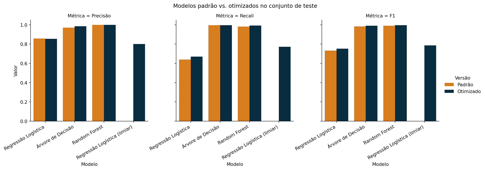
Matrizes de confusão
As métricas resumem a matriz de confusão. Vamos compará-la para os modelos otimizados:
fig, axes = plt.subplots(1, 4, figsize=(18, 4))
for ax, (nome, m) in zip(axes, otimizados.items()):
cm = confusion_matrix(y_test, m.predict(X_test))
sns.heatmap(cm, annot=True, fmt='d', cmap='Reds', cbar=False, ax=ax,
xticklabels=['Classe 0', 'Classe 1'],
yticklabels=['Classe 0', 'Classe 1'])
ax.set_title(nome, fontsize=11)
ax.set_xlabel('Rótulo Previsto')
ax.set_ylabel('Rótulo Verdadeiro')
plt.tight_layout()
plt.show()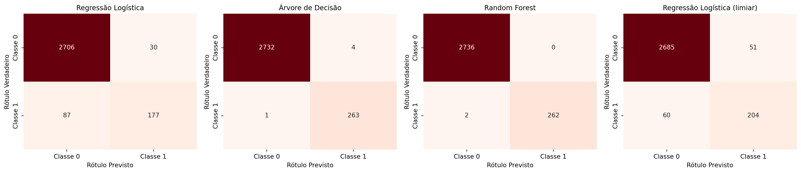
Compare a Regressão Logística com o limiar padrão e com o limiar otimizado: o modelo é o mesmo, apenas a regra de decisão mudou. Com o limiar menor, o modelo encontra mais fraudes (menos falsos negativos) em troca de mais alarmes falsos (mais falsos positivos). Para a Regressão Logística, ajustar o limiar trouxe um ganho de F1 maior do que ajustar C e class_weight.
Curvas ROC
plt.figure(figsize=(8, 6))
for cor, (nome, m) in zip(colors, list(otimizados.items())[:3]):
y_proba = m.predict_proba(X_test)[:, 1]
fpr, tpr, _ = roc_curve(y_test, y_proba)
auc = roc_auc_score(y_test, y_proba)
plt.plot(fpr, tpr, color=cor, lw=2, label=f'{nome} (AUC = {auc:.4f})')
plt.plot([0, 1], [0, 1], color='grey', lw=2, linestyle='--', label='Classificador Aleatório')
plt.xlim([0.0, 1.0])
plt.ylim([0.0, 1.05])
plt.xlabel('Taxa de Falsos Positivos (FPR)', fontsize=12)
plt.ylabel('Taxa de Verdadeiros Positivos (TPR)', fontsize=12)
plt.title('Curvas ROC - modelos otimizados', fontsize=16)
plt.legend(loc='lower right')
plt.tight_layout()
plt.show()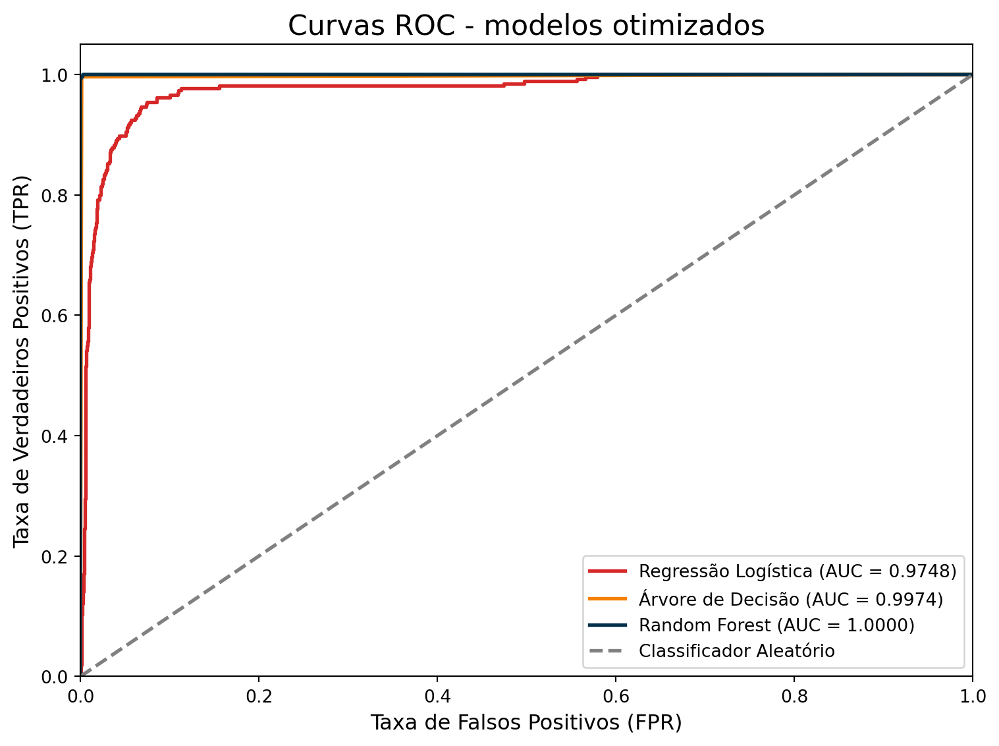
A Regressão Logística com limiar otimizado não aparece separada no gráfico porque a curva ROC não depende do limiar: ela já percorre todos os limiares possíveis. Por isso a AUC dos dois modelos de Regressão Logística é a mesma na tabela.
Relatório do melhor modelo
Por fim, o classification_report do modelo com maior F1 no teste:
melhor = resultados_df.sort_values('F1', ascending=False).iloc[0]
todos = {('Padrão', k): v for k, v in padrao.items()} | \
{('Otimizado', k): v for k, v in otimizados.items()}
modelo_final = todos[(melhor['Versão'], melhor['Modelo'])]
print(f"Melhor modelo: {melhor['Modelo']} ({melhor['Versão']})\n")
print(classification_report(y_test, modelo_final.predict(X_test),
target_names=['Não fraude', 'Fraude'], digits=4))Melhor modelo: Random Forest (Otimizado)
precision recall f1-score support
Não fraude 0.9993 1.0000 0.9996 2736
Fraude 1.0000 0.9924 0.9962 264
accuracy 0.9993 3000
macro avg 0.9996 0.9962 0.9979 3000
weighted avg 0.9993 0.9993 0.9993 3000
Resumo
- Em classificação com classes desbalanceadas, a acurácia engana: um baseline que nunca prevê fraude já tem acurácia alta. Use precisão, recall, F1 e AUC, e compare sempre com um
DummyClassifier. - Use o
StratifiedKFold, que mantém a proporção das classes em todos os folds. Use tambémstratify=ynotrain_test_split. cross_validate,GridSearchCVeRandomizedSearchCVaceitam várias métricas; o argumentorefitindica qual delas escolhe o melhor modelo.class_weight='balanced'é um hiperparâmetro importante em dados desbalanceados e desloca o equilíbrio entre precisão e recall.- O limiar de decisão também é um hiperparâmetro; o
TunedThresholdClassifierCVo otimiza por validação cruzada. - A otimização de hiperparâmetros melhora um modelo, mas não corrige a escolha de um modelo inadequado: a Regressão Logística otimizada continua bem abaixo das árvores, cujo formato combina com a estrutura do problema.
- O conjunto de teste só é usado na avaliação final.
Exercícios
- Refaça o Grid Search da árvore de decisão usando
refit='recall'em vez derefit='f1'. Quais hiperparâmetros são escolhidos? O que acontece com a precisão no teste? - Refaça a validação cruzada da Parte 1 com
StratifiedKFold(n_splits=10). O desvio padrão das métricas entre os folds aumenta ou diminui? Por quê? - Otimize o limiar de decisão do Random Forest otimizado com
TunedThresholdClassifierCV. O ganho é maior ou menor do que na Regressão Logística? - Inclua o hiperparâmetro
criterion('gini'e'entropy') no Grid Search da árvore de decisão. Quantos modelos passam a ser treinados? - Use
scoring='balanced_accuracy'na validação cruzada dos modelos da Parte 1. Como o Baseline se sai com essa métrica? Por quê?